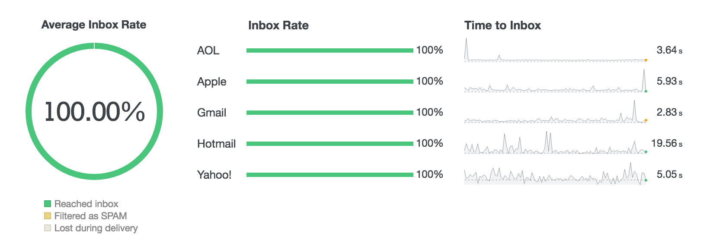
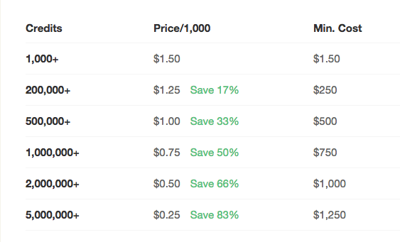

SOME BACKGROUND
Brandon Hubbard
CTO @
WordPress Contributions
- WordPress Core
- Jetpack
- Yoast SEO
- and more
WordPress Email
WordPress uses a function called
wp_mail();- WP Mail defaults to plain-text, not HTML.
- Emails typically are processed by server's php mail (Postfix, Sendmail, etc).
- Emails are NOT easily logged or tracked.
Transactional Emails
Emails NOT specifically for marketing purposes.
Some Examples
- WooCommerce Orders
- Form Emails
- Forgot/Reset Password email
- New User Welcome email
- etc
Why use Postmark?
Simply, we want to track everything!

Price?
The Setup
https://wordpress.org/plugins/postmark-approved-wordpress-plugin/
DMARC Reports
https://dmarc.postmarkapp.com
DMARC is a standard that prevents spammers from using your domain to send email without your permission.
Possible Roadblocks
No Fallback
- API Failure
- 3rd Party Plugins not aware of Postmark
- Doesn't check if SPF/DKIM/Sender Sig is setup or verified.
Also..
- Plugin doesn't support easy setup of Postmark tags.
- Can be setup with any domain setup in Postmark.
- No support for inbound.
WP API Libraries
https://wp-api-libraries.com
imFORZA is BETA testing for all our hosted clients.